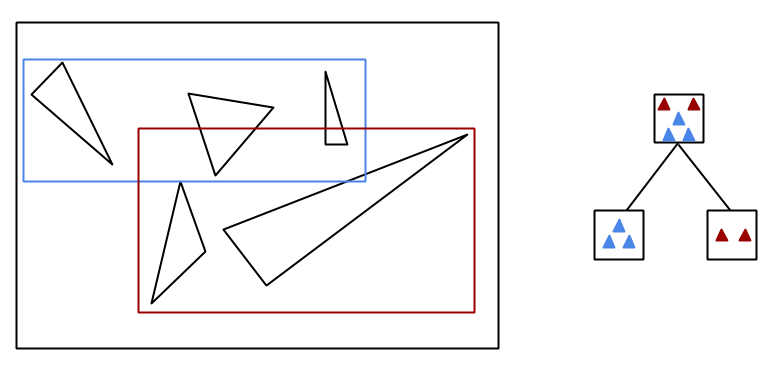
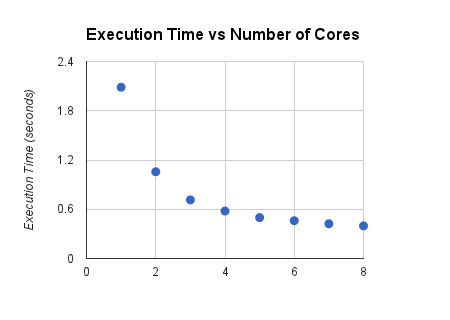
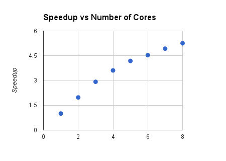
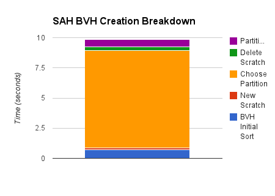
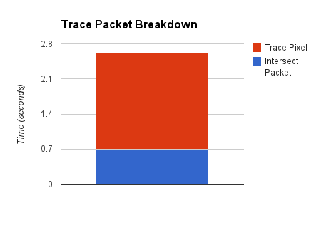

We have implemented a ray tracer utilizing bounding volume hierarchies (BVH) and packetized traversal on the CPU. The BVH is built using the surface area heuristic (SAH) to produce BVHs that are inexpensive to traverse. At the parallelism competition we demonstrated our ray tracer rendering detailed scenes at basic interactive rates.
Ray tracing is a technique for rendering 3D models of a scene to a computer screen. It calculates the color displayed by an image at each pixel by "tracing" a ray from the viewpoint, through the image plane, and to light sources in the scene, bouncing off of objects as it goes. Since a ray may intersect with multiple objects in the scene, finding the point of closest intersection is a search problem which can be highly computation-intensive.
Ray tracing is commonly used when high levels of realism are desired in an offline setting, for instance in film animation, but only more recently has been the subject of active research for online, real-time rendering applications. Naive algorithms for ray tracing can easily take many hours to traverse simple scenes, and even highly-efficient ray tracers can take long lengths of time given a high degree of desired realism. Our goal was to implement a ray tracer that provides a reasonable level of realistic detail at an interactive frame rate.
The ray tracing problem is embarassingly parallel in the sense that all rays are independent of one another, but the coherence of ray paths quickly breaks down within a typical scene, and the resulting divergence can prove problematic for data parallel hardware such as GPUs. In light of this, we chose to do our primary implementation on multi-core CPUs, where we can take advantage of separate cores that are able to gracefully handle branch instructions.

There are two major axes of our implementation: a bounding volume hiearchy and packetization.
The creation of the BVH acceleration structure is done as a pre-processing step before any rays are traced through the scene. The structure creates a bounding box around an entire model (containing arbitrary numbers of triangles) and recursively sub-partitions the interior triangles into smaller bounding boxes. The actual triangles are referenced at the leaf nodes, with each leaf holding up to a pre-set number of triangles, which in our case is set to optimize for the SIMD width of our processors.
At each node of the tree, the choice of how to partition the interior triangles into two child nodes is done by evaluating the Surface Area Heuristic, which roughly tries to balance the surface area of the triangles in each child node of the parent BVH node.

With axis-aligned boxes and n triangles, there are 3n - 3 possible choices for axis-aligned partitions between triangles. Since we restricted ourselves to static scenes for the purposes of this project, we only have to build the BVH once. Therefore, we elected to find the optimal partition at each level according to the SAH cost function by evaluating each possibility. Thus we traded increased (NLogN) build time for decreased logarithmic traversal time.
Packetization involves evaluating multiple rays at once. The normal ray tracing algorithm loops over all pixels on the screen, and for each pixel loops over all scene objects to find intersections. By packetizing, we group a block of screen pixels together and trace a frustum through the scene rather than individual rays. If the frustum does not intersect an object, then none of its interior rays will either, and the ray tracer can safely skip those rays in its computations.
In addition, each packet can be easily mapped over a CPU core for high level parallelism by putting all packets into a shared work queue. This seems to have the additional benefit of slightly reducing contention compared to individual pixels because of the larger compute time for each work item.
Once descended into a packet, we keep track of which rays are active at each node, meaning that the ray has not missed an intersection at a higher node in the tree (which means it would not intersect any child nodes either). By updating this list when we check the left and right nodes' bounding boxes, we only need to evaluate the active rays at each node. Leaf nodes contain up to a preset number of triangles.
Active triangle traversal of nodes and leaves is a promising candidate for SIMD instructions, but getting good speedup with ISPC proved to be challenging, as discussed in a subsequent section.
Once an intersection is found, the rays will reflect or refract, at which point the packet may no longer be coherent (the rays may not be tightly packed or going in similar directions). Because of this, we trace rays individually rather than in packets from the point of intersection.
The Happy Buddha image below contains over a million triangles and, after object loading and creation of the BVH (which only happen once), renders in less than a second on our laptops, allowing for basic interactivity.

Below is a table of our render times for both BVH building and traversal, for the different techniques we tried:
| BVH Type | Build | Traversal | ||
|---|---|---|---|---|
| 1 thread | 4 threads | 8 threads | ||
| Median Split | 1.04s | 7.92s | 2.21s | 1.75s |
| SAH | 8.77s | 3.95s | 1.09s | 0.87s |
| Packets + SAH | 8.77s | 2.91s | 0.79s | 0.60s |
Here is a table showing rays/second for our techniques:
| Technique | Traversal | ||
|---|---|---|---|
| 1 thread | 4 threads | 8 threads | |
| Median Split | 60600 | 217200 | 274300 |
| SAH | 121500 | 440300 | 551700 |
| Packets + SAH | 165000 | 607600 | 800000 |
Additionally, we achieved 1.2 million rays/sec on an Intel Core i7 in a Macbook Pro Retina. This is the machine that with which we demo'd at the parallelism competition.
By simply doing the traversal/pixel color computation across 8 threads on an Intel i7-2630QM CPU (4 physical cores + hyperthreading) we were able to obtain over 4x speedup. Hyperthreading accounts for the fact that we don't get a huge amount more speedup with greater than 4 cores. The near linear speedup is expected, since the splitting up the screen across multiple cores is embarrasingly parallel; each thread can write to its own part of the output image buffer, and threads only have to read from shared data structures, so there is no heavy contention.
|  |  |
| The left plot shows the execution time on 800x600 Buddha with SAH and packets for varying number of threads. The right plot show the speedup over the one threaded version using the same parameters. | |
We got a speedup of about 2x from moving to SAH from BVH in terms of BVH traversal time, but build time increased drastically. This slow down is acceptable to us since we are focusing on getting an interactive static scene, so we only have to build the BVH one time. If there is time we may optimize this build process by not trying so many different splits, and also by reducing dynamic memory allocation.
Using ISPC for leaf intersection with a packet ended up slowing down execution by about 60%. Since our data structures are all Vector3 types, with x, y, and z floating point members and operator overloading, we had difficulties simply passing our data into ISPC. Converting from our data structures to an ISPC readable structure takes some time, and all of the gather/scatter operations required to service our array of structures (AOS) data will cause a big slow down.
Below is our profiling data. Note on the right graph that intersecting primary rays takes a smaller percentage of the time than trace pixel, but reducing either would help significantly, so doing packet intersection should provide good speedup. The problem of improving trace pixel's performance is a harder one. Rays will become incoherent quickly, making it difficult to speed up this part with SIMD. Doing some kind of batching implementation that gathered packets of incident rays and did one recursive step in SIMD seems promising.
|  |  |
| The left chart shows the breakdown for the creation of the Surface Area Heuristic BVH. Note that the time for "New Scratch" is so small it is diffcult to see. The creation time is dominated by choosing partition. The right chart shows the time breakdown for tracing a single packet. Both steps take significant time, but trace pixel is the bulk of the work. | |
There are several strategies that would be worth pursuing to improve performance for interactive ray tracing.
There are a few things we could do to speed up the BVH traversal. As mentioned above, getting SIMD to work with data that is properly laid out in memory would improve packet traversal. The other imrpovement to packet intersection would be to pull the frustum intersection test into the BVH. This approach might allow earlier exit of all rays in the packet with a given BVH child node.
Another more significant change would be to make the tree an 8-ary tree instead of binary. Doing this would allow for testing a single ray in SIMD with all 8 children of a given BVH node. An 8-ary tree could be used either with a packet of rays, iterating over each ray and testing it with all children, or with single rays.
Do load balancing on the GPU and CPU: a piece of work is one call to trace pixel, if we can get large enough chunks of work (a large number of trace pixel requests), we can do chunks of them using SIMD (either GPU or ISPC). These SIMD operations could set some bit vectors (incident rays etc..)
Shadow tests are more data parallel, since they don't recurse. This could potentially be done on the GPU, but still has some issues with SIMD since it involves BVH traversalIf we got to the point where we have gotten as much performance as possible out of interactive tracing, a good next step would be to support animation. The big barrier to doing this is the BVH build time. Since nodes access disjoint data, the build can be split without too much worry for contention.
As shown in the breakdown for Trace Packet, the act of choosing the partition using SAH takes most of the time. This part of the algorithm requires doing partial sums of bounding boxes, and then computing the cost.
The other option would be to do some kind of parallelization of building subtrees. For example, for a CPU with 8 cores, spawn off a new thread to continue the sub-tree traversal at depth 3, when there are 8 separate subtrees and have those threads continue the tree build.
I. Wald, S. Boulos, and P. Shirley, Ray Tracing Deformable Scenes Using Dynamic Bounding Volume Hierarchies, 2007
I. Wald et al, State of the Art in Ray Tracing Animated Scenes, 2007
I. Wald, T. Ize, and S. Parker, Fast, Parallel, and Asynchronous Construction of BVHs for Ray Tracing Animated Scenes, 2007
Special thanks to Nico Feltman.
We pair-programmed a good deal of the project and did roughly equal work. Adam handled more of the BVH construction and Nathan more of the packetization.